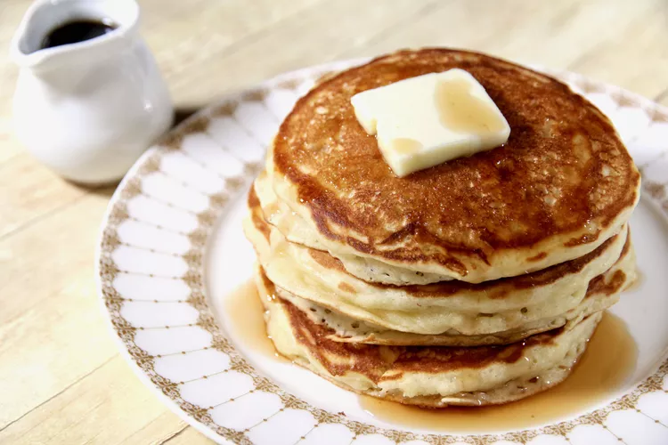

Buttermilk Pancakes

These are the best buttermilk pancakes. They are light and fluffy with a touch of maple flavor.
- Flour
- Sugar
- Buttermilk
- Eggs
- Maple syrup
- Baking powder
- Whisk and everything together in a large mixing bowl
- Whisk buttermilk and the others in another bowl
- Heat a large skillet over medium heat, cook until browned on the other side